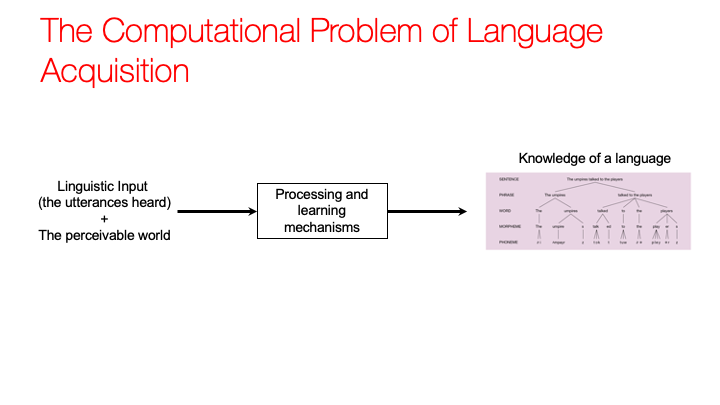
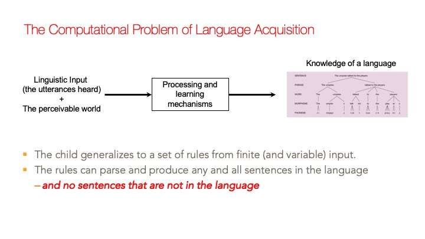

<!-- name: inverse layout: true class: center, middle, inverse --> # Recap ## Significance of Language to Cognitive Science * Species specific * something special about human minds * Universal * every culture has at least one language * every individual within a culture learns at least one language as a child * (we'll discuss the rare exceptions and what we can learn) - Debates about Nativism and Empiricism are in the forefront. --- ## Today: How language is a acquired ### Preliminary observations - language acquisition is automatic - language is not "taught" - follows predictable process across languages and across individuals within a language * although there are definitely individual differences * as well as differences across languages - (those differences can also be revealing about processes and representations) - errors are systematic and predictable, not random ??? Children do not have to exert effort to learn language. And there are no language lessons. They come predisposed to process their linguistic environment in just the right way that will allow them to converge on the target language. --- ## Today: How language is a acquired ### Preliminary observations #### Children acquire language through **positive evidence only** One could imagine: 1. Child has a hypothesis about their language's structure that is incorrect 2. They make an error in production 3. The expert (adult) corrects them 4. They update their grammar --- ### Preliminary observations: Children acquire language through **positive evidence only** But rather: 1. Child has a hypothesis about their language's structure (that is incorrect) 2. They make an error in production 3. Adults do all kinds of things, they may rephrase the utterance, they may repeat the utterance, they may ignore the error because they still understood (very common!), they may correct the error (fairly rare) 4. Child continues making error 5. 3 & 4 continue for a while 6. Children stop making the error, apparently from internally driven processes --- ### An anecdote from a linguist (David McNeill) Little Johnny: “Nobody don’t like me” -- Father: “No Johnny, say ‘nobody likes me’” -- Johnny: “Nobody don’t like me” -- Father: “No, it’s ‘nobody likes me’” -- J: “Nobody don’t like me” -- F: “No, ‘nobody likes me’” -- J: “OH! Nobody don’t LIKES me!” ??? Even when the child changes their grammar, they might not change the *right* thing! --- ### Preliminary observations #### Children acquire language through **positive evidence only** Researchers are stil developing theories of how children could be making predictions based on their current grammatical knowledge (e.g., about what adults may or may not say), and use the (in)accuracy of their predictions as a kind of evidence for or against their grammar. - but many are not yet convinced that this kind of approach is viable For our purposes, we will assume that the environment does not provide .red[_reliable_] corrective feedback. ---  ---  --- ### General Development Trajectory: Production - birth to about 6 months -- most vocalizations are non-linguistic: - grunts, coos, cries - ~6 months: babbling -- sequences of consonant-vowel syllables - universal properties - [ma] [ba] [pa] - some sounds may not be ones that the language in their environment (and what they will end up speaking) uses - even deaf infants babble for a short period around this times - instinctual ??? what's happening in comprehension? --- ### General Development Trajectory: Production - ~8-10 months: babbling starts to take on more qualities of the language(s) in the environment - in terms of the syllables - in terms of the _prosody_ - ~12-months: first words produced (though they understand some words months earlier) - mostly nouns, or _holophrastic utterances_, e.g., "uppy" --> request to be picked up. --- ### General Development Trajectory: Production - ~18-24 months: first multiword combinations (starting with 2-3 words) - nouns, in combination with verbs (and some adjectives, adverbs) - these are not complete sentences, but they are reduced utterances that adhere to the target grammar in many ways, e.g., word order, grammatical morphemes (when they occur) - e.g., _baby milk_, _baby touch_, _touch milk_ - _baby (is) touch(ing) milk (bottle)_ - the word order matches the target grammar --- class: center middle #Word Learning: A case of POS --- ## Word Learning: Poverty of the stimulus (overrichness of the stimulus) - from perceptual event in which the word is uttered to the concept - infinite possibilities in one naming instance - observe across situations? - probably to some degree - but children also can learn in one trial (one-shot learning) --- ## Word Learning: Poverty of the stimulus (overrichness of the stimulus) - innate constraints/biases (Ellen Markman) - what is the relevant thing in the world? - reference to whole object (not part) - what is the _concept_? - basic level - DOG vs. ANIMAL or DALMATION or FIDO - CHAIR vs. FURNITURE or OFFICE CHAIR - mutual exclusivity ??? These theories about innate constraints come from many laboratory studies teaching new words to preschoolers --- ## Word Learning: The classical view world <--> concept <--> word - The problem of word learning is figuring out what concept the word goes with. - Each time the word is heard, the child makes a hypothesis and tests the hypothesis next time. --- ## The empiricist/connectionist view world1<-->word1, world2<-->word1, world3<-->word1, world4<-->word1, world5<-->word1, world6<-->word1, ... - The problen of word learning is figuring out what thing/event in the world the word pairs with. -- - Each time a word is heard, the child tallies all the things in the environment, and eventually the thing that co-occurs most is taken to be the meaning of the word. -- - Something more general, like a concept, .red[_emerges_] in the hidden layers of the network. --- ### Word learning: Problems for connectionist approaches There is considerable debate about whether even words for concrete objects are learned this way. Just a few issues are: -- - words are often used when the relevant objects are not present -- - the way the world is _presented_ to the models presupposed some kind of categorization of the world into categories - and remember, categories go hand in hand with concepts, so that's a lot of _built in knowledge_, i.e., innate knowledge -- x - laboratory experiments with made-up words an novel objects suggest that learners may hold specific hypothesis about the category/concept associated with a novel word, rather than tracking all the contingencies of its use --- layout: true ## Word learning when there are no sensory cues --- - _think_? -- .image-35[] --- How would .red[_think_] and .red[_hear_] look different to a word learner? -- <table id="t1"> <tr> <th>Perception Verb</th> <th>Mental State Verb</th> </tr> <tr> <td>Sally hears a noise.</td> <td>John thinks <i>that</i> ...</td> </tr> <tr> <td>Sally sees a car.</td> <td>John knows <i>that</i> ...</td> </tr> <tr> <td>Sally feels a pinch.</td> <td>John believes <i>that</i> ...</td> </tr> </table> -- The _syntax_ can provide some information about the meaning of the word - .red[_Syntactic Bootstrapping_] (Lila Gleitman) --- layout: false class: center middle #Errors during language acquisition are relatively systematic and predictable --- ## Syntactic Development: Past Tense -- mastery and errors along the way .pull-right[- irregular - go --> went - eat --> ate - see --> saw - fall --> fell - drink --> drank - hit --> hit] - regular (by rule) - talk --> talk-ed - want --> want-ed - kick --> kicked-ed (although note the difference in sounds) --- ##English past tense error patterns: overgeneralization of irregulars - start out correctly, e.g. "went" - then "goed" (applying rule to stem) - and even "wented" (applying rule to past tense form) - eventually errors subside (some times as late as 7 years) - errors are often occur during the same period as correct production --- ## Past tense: The rule-based account - Children first learn the correct irregulars by rote - (at this stage, they don't inflect regular past tense: _he talk_ vs. _he talked_) -- - Then they notice the general "add _-ed_" pattern, and conclude that all past tense forms must be marked. - they construct a rule "add _-ed_" -- - The irregular forms are still in their mental lexicon, but sometimes they don't retrieve it, or they don't retrieve the information that it's already marked as past tense. - so they apply the rule, erroneously --- ## Past tense: A Connectionist account - The stem is encoded in the input layer - The inflected form is encoded in the output layer - The hidden layers "learn" the associations - Everything (irregular and regular past tense forms) is stored in the associations built up in the hidden units - The model shows the general behavior for irregulars: - correct --> errors --> correct --- ## Criticisms of the connectionist account - It requires certain timing of the irregulars and regulars in the input - which is not attested in reality - The encoding methods bias the model to noticing the parts of words that are important - i.e., innate knowledge - The behavior of the model does not really mirror the facts --- layout: true ## Forming questions in English * The child is ordering ice cream. * .red[Is] the child .red[_] ordering ice cream .red[?] --- What is the relationship between a statement and a related yes/no question? --- # * The child who is hungry is ordering ice cream. -- * .red[Is] the child who is hungry .red[_] ordering ice cream? -- ❌ .red[Is] the child who .red[_] hungry is ordering ice cream? ??? The interesting facts are that while young children hear lots of questions of the first type, they hear none or very few of the second type. In other words, the stimulus/input is impoverished. Yet, they don't seem to have any trouble understand or even producing those kinds of sentences from an early age. This suggests that they have some internal guidance as to what reorganizations of word order is correct and which isn't, without information from the environment. But note that there is no a prior reason why the ungrammatical sentene couldn't mean: "Is the child who is ordering ice cream hungry?" That's perfectly logical, it's just not English. It's not random either. --- layout: false #The patterns are governed by abstract structures and rules The grammatical restriction has to do with the abstract (i.e., not observable in the environment) structure of the sentence, and some grammatical rules. * .green[The [child who is hungry] is ordering ice cream.] * .orange[[child who is hungry]] is a special kind of structure -- the whole list of words acts like a noun in the grammar. -- * There is a grammatical restriction about moving things out of that kind of structure. --- ### An Empiricist/Connectionist Account Children are excellent statistical talliers [there's actually evidence for this], and they are constantly tracking word co-occurrence patterns in sentences [there's evidence for this, too]. Analyze actual child-directed speech (transcriptions from recordings at children's homes, e.g.) 1. Tally word pair sequences (**bigrams**): - _Look at the girl who is playing!_ : _look at_, _at the_, _the girl_, ... 2. Have the learning simulator judge the probability of new sentences that it hasn't experienced before. - judgements based on the probabilities of all the bigrams --- ### An Empiricist/Connectionist Account 3) Compare the grammatical and ungrammatical questions, and see which on "wins" based on the probabilities of its bigrams. The grammatical one wins out over the ungrammatical! The conclusion: Structure dependent constraints on question formation (where you can _extract_ from) are not necessary. - Children can learn from the statistical patterns in simpler sentences what the correct form of complex questions is. - In general, statistical patterns in children's language experience is responsible for how they structure sentences. --- ADULT: _Look at the girl who is playing!_ child: - _look at_: 1 - _at the_: 1 - _the girl_: 1 - _girl who_: 1 - _who is_: 1 - _is playing_: 1 --- ADULT: _Here is the frog who is funny!_ child: - _Here is_: 1 - _is the_: 1 - _the frog_: 1 - _from who_: 1 - **_who is_: 2** - _is funny_: 1 --- .red[Is] the child who is hungry .red[_] ordering ice cream? **\*** .red[Is] the child who .red[_] hungry is ordering ice cream? #### The main difference comes down the probabilities between _who is_ and _who hungry_. The former is very frequent, the latter is virtually non-existent, so the first sentence "wins". --- ### Problems with the empiricist account 1. The advantage for _who is_ in child-directed speech is not from relative clauses (e.g., _the frog who is funny_), but from questions (e.g., _Who is that?_). - it is an accident of English that the "relativizer" _who_ is the same as the _wh-word_. - this is not the case in other languages, so the computational solution wouldn't work. - e.g, it has been shown to fail in Dutch. 2. There are very similar sentences in English that don't have the influential _who is_ bigram: - _Is the boy who the girl is talking to_ \_ _hungry?_ --- # Next time - acquisition in the blind - what concepts are available for verbs like _look_ and _see_? - cases where there is no input - a peek into the state of innate knowledge - cases where there is delayed input - what happens when input and normal maturation are out of phase? - the evolution of a language (by children) - more about language and thought